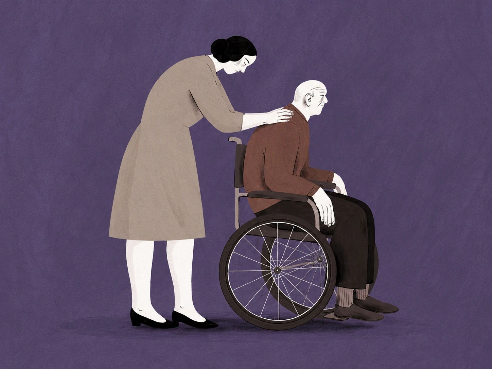
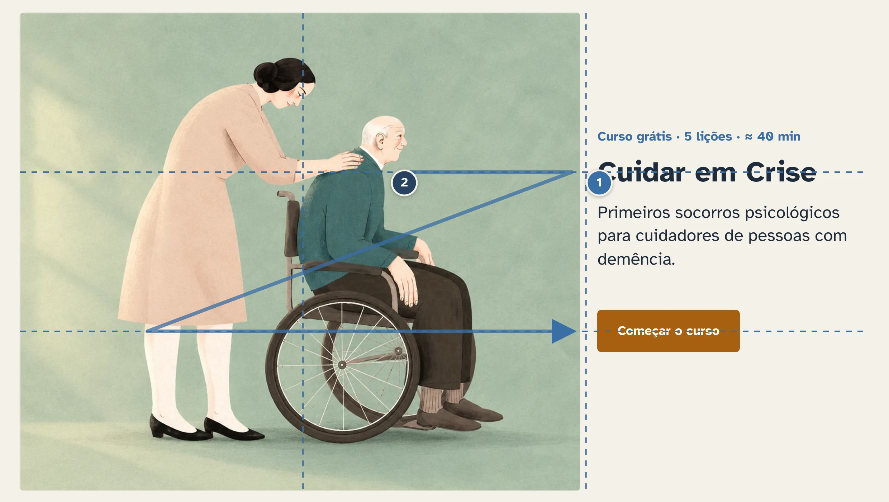
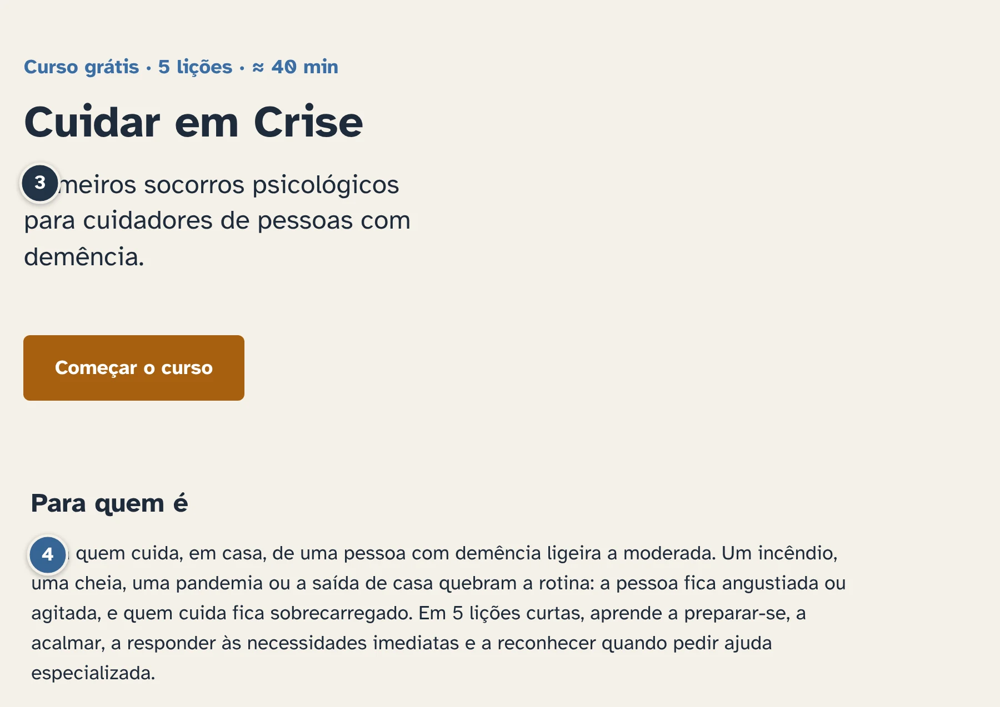
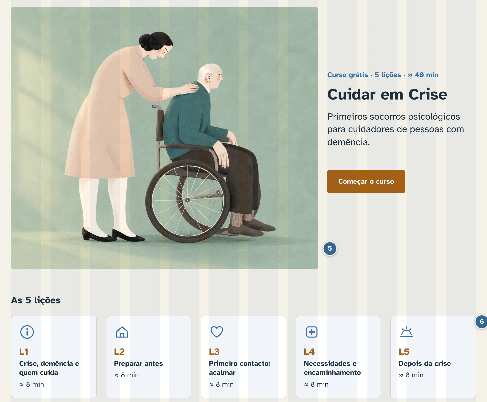
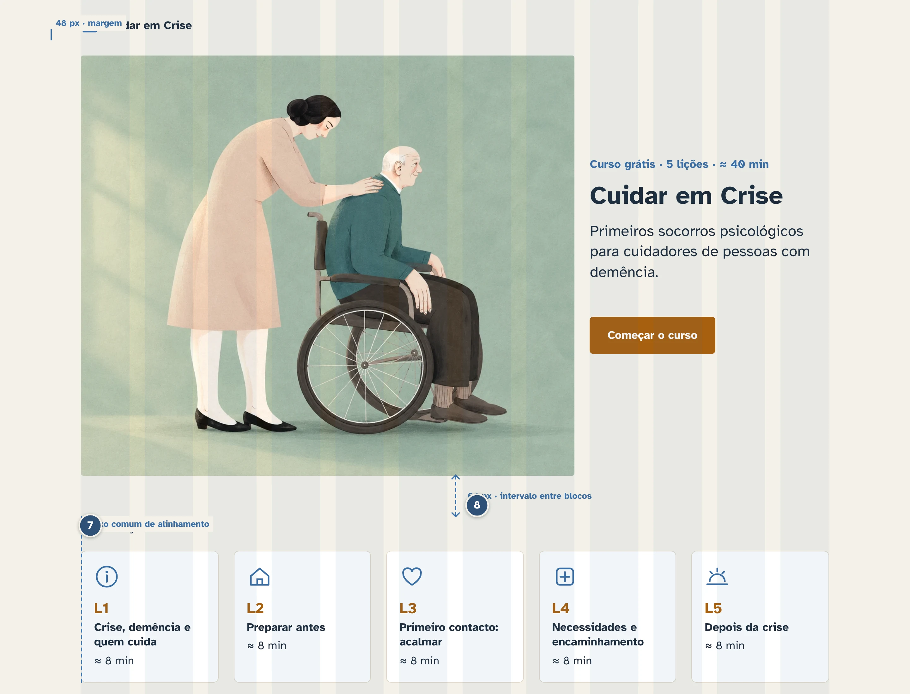
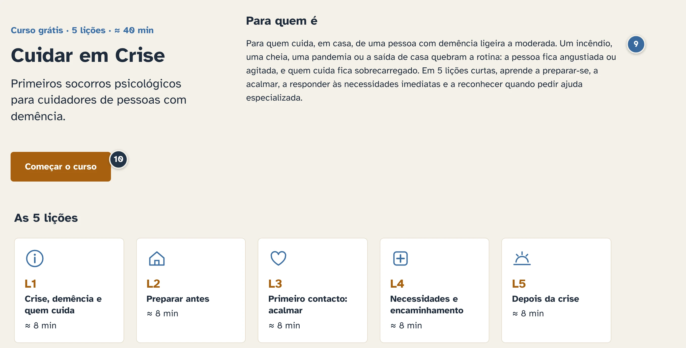

CAMUL 2026/27 · Teórica
A página inicial do MOOC «Socorros psicológicos: cuidador de demência em crise» e as 10 regras que a organizam.
Grupo 1
O trabalho
A abertura do curso «Socorros psicológicos: cuidador de demência em crise» aplica 10 regras. O botão «Mostrar regras» acende os marcadores, os terços, o percurso em Z e a grelha.
Cada um fez um avatar a partir de um vídeo seu. Em 20–30 s, explica as suas 2 regras e o que fez em cada uma.
4 dimensões, 8 fatores e 31 critérios para avaliar a página, todos com medida numérica.
Quem fez o quê
Regra dos terços
Direção e movimento
Hierarquia visual
Tipografia
Equilíbrio assimétrico
Unidade, padrão e proporção
Alinhamento
Espaço negativo
Contraste
Ênfase
A ordem é a dos marcadores na página: do título e da foto, no topo, até ao botão.
Clique em «Mostrar regras»: as setas ← → passam de regra em regra. Para voltar aos diapositivos, clique fora da página.
As setas estão na página. Clique fora dela para voltar aos diapositivos.
Abrir em separado ↗
O título e o botão estão nos pontos fortes do terço direito.
As pessoas da foto olham para o título e o olhar segue em Z até ao botão.
Regras 1 e 2
▶ Clique no vídeo ou Enter.

Título 40 px > promessa 24 px > corpo 18 px > rodapé 14 px.
Uma só família sem serifa, 2 pesos, corpo de 18 px e linhas até 70 caracteres.
Regras 3 e 4
▶ Clique no vídeo ou Enter.

A foto, que pesa mais, equilibra-se com o texto e o espaço vazio.
5 cartões iguais (ícone, título, duração) e foto:texto ≈ 2:1.
Regras 5 e 6
▶ Clique no vídeo ou Enter.

Grelha de 12 colunas, eixo comum à esquerda e margens laterais iguais.
Margem lateral de 48 px e intervalo de 64 px entre blocos.
Regras 7 e 8
▶ Clique no vídeo ou Enter.

O texto tem 12,9:1 com o fundo, acima dos 4,5:1 da WCAG AA.
O âmbar é a única cor de destaque, só no botão e nos números das lições.
Regras 9 e 10
▶ Clique no vídeo ou Enter.
Paleta e acessibilidade
| Texto | Fundo | Amostra | Rácio · AA 4,5:1 |
|---|---|---|---|
| Texto | Areia | Aa | 12,9:1 ✔ |
| Texto (cartões) | Branco | Aa | 14,5:1 ✔ |
| Azul | Areia | Aa | 4,7:1 ✔ à justa |
| Branco (botão) | Âmbar | Aa | 4,8:1 ✔ |
| Âmbar (L1–L5) | Branco | Aa | 4,8:1 ✔ |
| Âmbar | Areia | Aa | 4,3:1 ✘ nunca |
Por isso os cartões das lições são brancos. Letra: Atkinson Hyperlegible, 2 pesos (400 e 700). Foco do teclado: contorno azul de 3 px.
Avaliação
Cada critério tem uma medida numérica (px, s, %, contagem, pontuação). Q = 1 − D/√4. Teste com 3–5 pessoas que não fizeram a página e questionário SUS. Cumprimento ainda por preencher: à espera do feedback da professora.
Obrigado
10 regras · 5 pessoas · 1 página
Ilustração da abertura: adaptada de Susa Monteiro, para o Diário do Alentejo. Avatares feitos no D-ID.
CAMUL 2026/27 · ISEP · Grupo 1: Bruno Lopes, Tiago Teixeira, Rodrigo Silva, Ricardo Ferreira, Evandro Carvalho